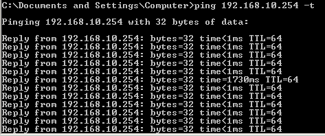

Vous êtes de plus en plus nombreux à vous intéresser à la virtualisation, cette technologie présent en effet de nombreux avantages que ce soit pour les professionnels ou les particuliers. Provisioning rapide, maîtrise des coûts, plateformes de tests et maquettage simplifié, les désavantages à la virtualisation sont peu nombreux, mais saviez vous que l'on pouvait virtualiser autre chose que des OS de type serveur (FreeBSD, Debian, Windows Server, Solaris etc) ou grand public (Windows Seven, Ubuntu et autres Linux) ?
Je vais vous présenter ici une distribution orientée routage que nous allons virtualiser : Vyatta
Pour ceux à qui la virtualisation ne dit pas grand-chose, ne vous inquiétez pas, vous n'avez pas besoin d'avoir de connaissances particulières dans ce domaine, il suffit d'accepter qu'un routeur n'est pas nécessairement une boîte avec Cisco ou Netgear marqué dessus.
Je ne présenterais ici que le fonctionnement propre à Vyatta, je ne détaillerais pas les implémentations de tous les protocoles, il ne s'agit pas ici de faire un cours de réseau, mais il est évident que vous en aurez besoin si vous comptez utiliser Vyatta par la suite.
Allez on commute ses neurones et on se met en marche !
Un routeur est un équipement informatique permettant de faire communiquer deux réseaux. Votre réseau local où vous vous trouvez actuellement est connecté à Internet par l'intermédiaire d'un routeur, il s'agit sûrement de votre box. Un routeur permet de connecter deux réseaux, mais aussi de les séparer. Dans une entreprise, pour des raisons de sécurité, on pourrait souhaiter séparer le réseau des employés de celui de la direction afin que des informations sensibles ne circulent pas n'importe où.
Le routeur est l'équipement au cœur d'Internet. C'est grâce à lui que vous pouvez communiquer d'un bout à l'autre de la planète, son rôle principal étant de trouver le chemin entre vous et votre correspondant. C'est ce qu'on appelle le routage, chaque routeur indique à une information quel est le prochain routeur qu'elle doit utiliser pour atteindre sa destination. Nous reviendrons sur cette notion à la fin du tutoriel.
Vyatta est donc un OS assurant des fonctions de routage, il peut donc servir à vous connecter à Internet, il peut être utilisé comme firewall dans votre réseau et il peut aussi permettre de séparer votre ordinateur du réseau local de votre maison et ainsi disposer d'un réseau local connecté mais indépendant du premier.
On pourrait ainsi comparer Vyatta aux OS des grands constructeurs de matériels réseau comme IOS de chez Cisco Systems ou JUNOS de Juniper Networks. Mais à la différence de ses concurrents, Vyatta n'est pas fourni sur un équipement physique, il s'agit d'un OS comme n'importe quelle distribution Linux que vous pouvez installer sur n'importe quelle machine disposant d'un processeur de type x86 (c'est-à-dire la quasi-totalité des ordinateurs actuels).
Vyatta existe sous deux versions différentes, une payante et une open source gratuite. Nous utiliserons dans ce tutoriel la deuxième version, toutes les fonctions importantes attendues d'un routeur sont présentes, en revanche l'interface web n'est désormais plus présente dans la version gratuite. Mais personne ici ne comptait l'utiliser de toute façon, n'est-ce pas ? :diable:
Vyatta se pilote via une interface en ligne de commande, la syntaxe est proche de celle de JUNOS mais reste relativement proche d'IOS pour que les habitués de chez Cisco ne se sentent pas perdus.
Basé sur une distribution Debian, il est intéressant de noter que Vyatta peut être amélioré/complété en installant des packages supplémentaires (les dépôts Debian sont accessibles) ce qui est impossible chez les constructeurs commerciaux qui ne donnent pas accès à l'OS.
Dans la suite du tutoriel, plusieurs machines virtuelles seront utilisées afin de simuler un réseau "complet". Il est possible que votre ordinateur personnel ne supporte pas un nombre aussi élevé de machines virtuelles. Nous aurons besoin au final de 2 machines virtuelles tournant sous Vyatta ainsi qu'au moins une machine virtuelle où sera installé le système d'exploitation de votre choix. Néanmoins vous pouvez tout à fait suivre le tutoriel sans expérimenter vous même tout ce qui sera décrit et présenté.
Commençons par nous rendre sur la page de téléchargement du site officiel. On vous demande quelques informations avant de vous proposer deux versions différentes de Vyatta.
La première est une image "normale", comme celle que vous avez peut être l'habitude de télécharger pour installer une distribution Linux.
La seconde est une image optimisée pour être installée sur une machine virtuelle Vmware, Xen ou Hyper-V.
Passons maintenant à l'installation !
Configuration de notre machine virtuelle
Nous effectuerons nos tests sur une machine virtuelle, j'utilise pour ma part Vmware Workstation 8, mais si vous préférez VirtualBox ou que vous avez votre propre serveur de virtualisation, pas de soucis ^^
Cependant la configuration matérielle de notre VM va devoir respecter quelques points. Vyatta est un routeur, il va lui falloir plusieurs interfaces réseaux pour qu'il serve à quelque chose. Pour ce tutoriel, 2 me semblent suffisant. La RAM et le processeur importent peu, nous ne brusquerons pas trop notre Vyatta, quant à l'espace disque, 3Go devrait suffire. Voici ma configuration :
Il y a un point en revanche où il est important de faire particulièrement attention, c'est celui des cartes réseau. Les sociétés éditant les logiciels de virtualisation ont crée plusieurs modes de connexion pour les cartes réseau donnant à votre VM accès ou non au LAN et/ou à Internet.
Un routeur sert d'interconnexion entre deux réseaux, il va donc nous falloir simuler ces deux réseaux, et il faudra faire attention à ce que ceux-ci soient bien distincts. Workstation/Vmware Player et Virtualbox proposent plusieurs modes pour les cartes réseaux, chacun a un comportement différent et il est important de choisir le bon en fonction du résultat que l'on souhaite obtenir.
Le mode bridge ou pont
Le mode bridge ou pont permet à la VM de devenir une machine à part entière du réseau local de la machine physique. Votre machine virtuelle a accès à Internet (à condition que votre machine physique l'ait aussi ^^) ainsi qu'au reste du réseau local. Il y a de fortes chances que votre VM récupère une adresse par votre serveur DHCP, typiquement votre box. C'est le mode que je vous conseille d'utiliser lorsque vous créez une machine virtuelle dans un but de test et qu'aucune configuration réseau particulière ne vous ait demandé.
Le mode NAT
Le mode NAT place votre machine virtuelle dans un autre réseau indépendant du LAN de la machine physique. Une connexion existe entre ces deux réseaux et c'est votre machine physique qui assure l'interconnexion. Lorsque vous sortez du réseau de la VM pour aller sur Internet ou dans le LAN de la machine hôte, celle-ci va temporairement vous "prêter" son adresse. Le NAT est la technique utilisée par vos box pour vous donner accès à Internet, tous les ordinateurs chez vous sortent sur Internet avec la même adresse IP, celle de votre box.
Le mode Host-only
Le mode Host-only ressemble fortement au NAT si on le représentait par un schéma. La différence majeure étant qu'il n'y a pas de mécanisme de translation effectué par la machine hôte. Votre VM est cantonnée à son réseau local et ne peut en sortir. Sauf manipulation particulière que l'on verra un peu plus loin dans le tuto. Depuis la version 8, Workstation propose un nouveau mode : le lan segment. Son comportement est le même que le Host-only à une différence près. Pour que deux machines soient dans le même réseau, elles doivent à la fois avoir une adresse de réseau identique et se trouver dans le même lan segment. Il s'agit en fait d'une sorte de VLAN pour ceux à qui le terme dit quelque chose. Ce n'est pas très important ici, vous pouvez utiliser les lan segments si vous le souhaitez, veillez juste à utiliser le même pour les machines faisant partie du même réseau.
Dans mon exemple j'ai placé une de mes cartes en bridge et l'autre en lan segment que j'ai nommé "lan_sdz".
Notre machine est donc prête à être lancée. Veillez bien à placer l'iso téléchargé précédemment dans le lecteur CD de votre machine virtuelle et allumez celle-ci.
Vous devez arriver sur cet écran-ci :
Pressez la touche "entrer" pour booter sur Vyatta. Vous finissez si tout se passe bien devant une demande de login et de mot de passe.
Le login et le mot de passe sont vyatta
Le prompt indique ensuite : vyatta@vyatta:~$ Nous sommes actuellement dans le mode livecd de Vyatta, mais nous préférons l'installer sur la machine virtuelle que nous venons de créer. La commande est install-system Les questions habituelles lors d'une installation vont vous être demandées : Êtes-vous sûr de vouloir l'installer ? Sur quelle partition (nous n'en avons qu'une seule) ? Toutes les données vont être perdues (le disque est vide) ? etc. Normalement les choix par défaut conviennent mis à part lorsqu'on vous demandera de valider la suppression des données sur la partition d'installation.
L'installation ne vous prendra pas plus de 5 minutes. Une fois finie, vous pouvez rebooter votre machine virtuelle. Pensez à déconnecter votre lecteur CD pour ne pas booter une nouvelle fois sur le livecd. Saisissez vos identifiants et vous voilà logué sur votre premier routeur virtuel !
Première configuration
A la manière du système d'exploitation IOS de Cisco, Vyatta dispose de plusieurs modes de configuration, au nombre de deux. Vous êtes logués dans le mode "normal", symbolisé par la caractère à la fin de votre prompt $ Pour passer en mode de "configuration", vous devez taper configure. Votre prompt change et le symbole de fin devient : # La commande exit vous fait revenir au mode normal.
Nous sommes donc en mode de configuration. Vyatta a prévu (à la manière de Cisco et d'autres constructeurs) une aide pour vous assister lors de la configuration de votre routeur. Cette aide se caractérise par une auto-complétion de vos commandes accessibles soit grâce à la touche de tabulation soit par la touche du point d'interrogation. Un appui affiche la liste des mots-clés disponibles, un deuxième appuie, affiche la description de ceux-ci.
vyatta@vyatta#
comment copy load run
commit delete loadkey save
commit-confirm discard merge set
compare edit rename show
confirm exit rollback
[edit]
vyatta@vyatta#
Possible completions:
confirm Confirm prior commit-confirm
comment Add comment to this configuration element
commit Commit the current set of changes
commit-confirm
Commit the current set of changes with 'confirm' required
compare Compare configuration revisions
copy Copy a configuration element
delete Delete a configuration element
discard Discard uncommitted changes
edit Edit a sub-element
exit Exit from this configuration level
load Load configuration from a file and replace running configuration
loadkey Load user SSH key from a file
merge Load configuration from a file and merge running configuration
rename Rename a configuration element
rollback Rollback to a prior config revision (requires reboot)
run Run an operational-mode command
save Save configuration to a file
set Set the value of a parameter or create a new element
show Show the configuration (default values may be suppressed)
[edit]
vyatta@vyatta#
La plupart des commandes qui vont nous intéresser commence par set. Si vous faites un petit tab derrière, vous vous rendez compte que les choix sont nombreux ensuite. Chez Cisco, la configuration d'un équipement se fait par le passage dans des modes de configuration successifs, ceux-ci sont imbriqués. Sur Vyatta, la configuration se fait toujours sur une seule ligne de commande, ce qui induit automatiquement des commandes relativement longues.
Voyons quelques exemples afin de rendre ceux-ci plus parlant :
La première chose que nous allons faire est d'activer les connexion SSH sur Vyatta. Il sera en effet bien plus simple de s'y connecter de cette façon et nous retrouverons notre bon vieux clavier azerty. L'opération se déroule en trois étapes : on passe en mode configuration, on exécute la commande appropriée, on applique les changements au système.
vyatta@vyatta:~$ configure
[edit]
vyatta@vyatta# set service ssh listen-address 0.0.0.0
[edit]
vyatta@vyatta# commit
[ service ssh ]
Restarting OpenBSD Secure Shell server: sshd.
[edit]
vyatta@vyatta#
Le service SSH est maintenant activé.
A quoi sert la commande commit ?
Tandis que sous Cisco, une fois la commande exécutée celle-ci est automatiquement appliquée, sous Vyatta, il faut "valider" afin que la commande soit appliquée au système. En cas d'erreur de syntaxe, d'incohérence dans la configuration (adresse IP configurée à la fois en statique et en dhcp par exemple), le système vous préviendra de l'erreur au moment du commit.
Maintenant que le service SSH est activé, il nous faudrait une IP sur laquelle se connecter. On aimerait pouvoir consulter l'état de nos interfaces réseau. Pour cela nous allons repasser en mode normal et utiliser la commande show.
vyatta@vyatta:# exit
[edit]
vyatta@vyatta:~$ show interfaces
Codes: S - State, L - Link, u - Up, D - Down, A - Admin Down
Interface IP Address S/L Description
--------- ---------- --- -----------
eth0 - u/u
eth1 - u/u
lo 127.0.0.1/8 u/u
::1/128
Nous voyons donc bien nos deux interfaces réseau (+ l'interface de loopback), elles sont toutes les deux UP, en revanche aucune d'entre elles n'a d'adresse IP.
Si vous avez respecté ma configuration des cartes Ethernet, vous devriez en avoir une configurée en bridge (ou pont). Nous allons configurer cette carte là, en laissant votre serveur DHCP (il s'agit sûrement de votre box) lui attribuer une adresse.
Regardons maintenant le résultat du coté de nos interfaces :
vyatta@vyatta# run show interfaces
Codes: S - State, L - Link, u - Up, D - Down, A - Admin Down
Interface IP Address S/L Description
--------- ---------- --- -----------
eth0 192.168.1.49/24 u/u
eth1 - u/u
lo 127.0.0.1/8 u/u
::1/128
Notre interface a récupéré une adresse grâce au DHCP !
Maintenant que votre routeur a, au moins, une adresse IP et que le service SSH est activé, nous allons pouvoir nous y connecter en SSH (via Putty avec Windows ou en terminal avec Linux).
Après voir réalisé une configuration simple d'un routeur Vyatta, nous allez essayer d'aller un peu plus loin. Pour l'instant notre routeur a un comportement relativement simpliste, il ne possède que deux interfaces, chacune ayant une adresse IP de configurée. Or Vyatta dispose de fonctionnalités bien plus intéressante que la simple connexion de deux réseaux.
Malheureusement, il serait bien trop long de détailler toutes les fonctionnalités de Vyatta. Nous nous concentrerons donc sur deux points que j'ai trouvé intéressant d'aborder.
NAT
La translation d'adresse (Network Address Translation) est la technique utilisée par les fournisseurs d'accès Internet (Orange, Free, SFR etc) pour vous permettre d'avoir un accès à Internet "sécurisé". Je reviendrais sur la notion de sécurité un peu plus loin.
Pour vous donner accès à Internet, vous avez une box (ou un modem/routeur c'est la même chose), celle dispose d'une interface (LAN) connectée à votre réseau local, et une autre (WAN) connectée à Internet. Vos ordinateurs sont connectés à Internet via cette box. Or vos ordinateurs ont des adresses IP privées, ces adresses ne permettent pas de naviguer sur Internet. Mais votre box, elle, a une adresse IP publique sur son interface WAN. Lorsque vous souhaitez accéder à Internet, votre box va changer l'adresse IP source (qui est privée) de vos paquets par son adresse IP publique à elle. C'est ce qu'on appelle de la translation.
On défini dans un premier temps vers quel réseau sera concerné par cette translation. Notre exemple est simple puisqu'il n'y a qu'un seul réseau. On aurait très bien pu choisir de ne nater qu'un seul ordinateur. Ensuite on choisi l'interface sur laquelle on va nater le trafic, ici évidemment c'est l'interface WAN. Enfin on spécifie le type de translation. Ici c'est "masquerade", cela signifie que la nouvelle adresse IP source sera l'adresse principale de notre interface de sortie, ici eth1 n'a qu'une seule IP donc ce sera 11.12.13.14. Imaginons que le réseau relié à eth1 soit 10.0.30.0/24 et nous appartiennent, nous aurions pu nater sur toutes les adresses du réseau, Vyatta aura eu juste à choisir une adresse au hasard dans ce réseau.
Avec ça, notre ordinateur peut enfin surfer sur Internet.
Parlons un peu sécurité maintenant. Nous avons donc tout le réseau 10.0.10.0/24 qui peut naviguer sur Internet. Tous les ordinateurs de ce réseau vont naviguer avec la même IP publique. Mais si l'ordinateur demande une page web, le serveur web sur Internet va répondre à 11.12.13.14, sauf que nous on aimerait bien que la réponse arrive jusqu'à 10.0.10.1... Lorsque votre routeur effectue une translation, il garder cette translation en mémoire. Ainsi lorsque les requêtes reviennent, il sait qu'il doit à nouveau translater, mais cette fois c'est l'adresse de destination qu'il remplace, 11.12.13.14 est remplacée par 10.0.10.2 ;)
Est-ce que quelqu'un sur Internet peut joindre directement mon ordinateur ? Si aucune session n'a été préalablement établie ?
Non ce n'est pas possible. Les PC sur Internet ne peuvent contacter que 11.12.13.14, ce qu'il y a derrière ils ne connaissent pas. C'est la sécurité induite par l'utilisation du NAT. Mais ça n'est qu'une conséquence, le NAT n'est pas un mécanisme de sécurité, ça apporte de la sécurité, mais ça ne doit pas être utilisé pour ça. Le NAT a été à la base inventé pour subvenir à la pénurie d'adresses IPv4.
Oui mais moi, j'ai installé un serveur web chez moi et je voudrais qu'il soit accessible depuis Internet !
Ça en revanche c'est possible. Sauf que cette fois, nous allons utiliser le NAT, non pas pour sortir sur Internet, mais pour permettre à Internet de rentrer dans notre réseau ! Une technique possible serait de dire que tout ce qui est à destination de 11.12.13.14 est automatiquement envoyé à notre serveur. Bon c'est pas très sécurisé ça. C'est un serveur web, normalement les seules requêtes légitimes qui peuvent atteindre ce serveur devrait être à destination du port 80, le reste ne nous intéresse pas. Et bien nous allons translater les requêtes à destination de 11.12.13.14:80 vers 10.0.10.2:80 et uniquement celles ci.
vyatta@vyatta:~$ configure
[edit]
vyatta@vyatta# set nat destination rule 10 description ACCESS-SERVER-WEB
[edit]
vyatta@vyatta# set nat destination rule 10 destination port 80
[edit]
vyatta@vyatta# set nat destination rule 10 inbound-interface eth1
[edit]
vyatta@vyatta# set nat destination rule 10 protocol tcp
[edit]
vyatta@vyatta# set nat destination rule 10 translation address 10.0.10.2
[edit]
vyatta@vyatta# commit
[edit]
Cela ressemble fortement à ce qu'on avait tout à l'heure. Si on traduit ça signifie : "Tout ce qui arrive sur l'interface eth1 à destination du port tcp 80 est translaté vers 10.0.10.2". La translation ne précise pas de nouveau port de destination donc, on garde le même.
Virtual Router Redundancy Protocol
Présentation
Imaginons que vous avez deux connexions ADSL et que vous souhaitez assurer une connexion constante à Internet. Tout votre trafic passerait par un routeur, mais dans le cas où celui ci tomberait, le second routeur viendrait prendre le relai. Le protocole répondant à ce comportement s'appelle VRRP.
Son comportement est relativement simple. Les routeurs vont former un groupe VRRP et chacun d'entre eux se verra attribuer une priorité. Ce groupe disposera d'une adresse IP virtuelle (VIP), que l'on pourrait aussi qualifier de "partagée" c'est à dire qu'elle appartiendra tantôt à un routeur, tantôt à un autre. Ainsi de votre coté, vous n'aurez jamais à changer l'adresse de votre passerelle quand bien même un de vos routeurs serait déconnecté, vous ne voyez que l'adresse IP virtuelle, pas le reste.
Dans ce groupe un des routeurs sera master, les autres slaves, le master envoie des messages d'information aux routeurs slaves pour leur annoncer son état de santé, on appelle cela le heartbeat (battement de cœur), lorsque celui ci cesse, les routeur slaves comprennent que le master est tombé et élisent au poste de master, le routeur ayant la plus haute priorité. Celui ci devient master et hérite de l'IP virtuelle.
Voici un schéma résumant ce fonctionnement :
R1 et R2 constituent le groupe VRRP (pool en anglais), R1 possède l'adresse locale 192.168.10.253, R2, 192.168.10.252 et ils partagent tous deux 192.168.10.254.
Les routeurs partagent une adresse IP, OK. Mais à quelle adresse MAC sont envoyées les requêtes ? Partagent-ils aussi une adresse MAC virtuelle ?
L'adresse IP virtuelle est commune à tous les routeurs, en revanche ils ne partagent pas d'adresse MAC. Chaque master conserve sa propre adresse MAC. Or cela pose un problème. Les machines du réseau possèdent une table ARP où figurent les correspondances IP/MAC. Si une machine souhaite joindre l'adresse IP virtuelle, elle va envoyer sa requête à l'adresse MAC du dernier master qu'elle a contacté, or si celui ci à changer entre temps, l'adresse MAC n'est plus la bonne et la requête n'atteindra jamais notre groupe VRRP. Pour palier à ce problème, le master fraîchement élu envoi un gratuitous ARP à toutes les machines du réseau, ceci ayant pour effet de mettre à jour leur table ARP.
NB : L'implémentation de VRRP change en fonction des constructeurs, certains ont décidé de mettre en place aussi une MAC virtuelle qui est commune aux deux routeurs.
Configuration et tests
Nous allons maintenant configurer VRRP sur nos deux routeurs.
J'utilise 4 machines virtuelles pour cet exemple. Deux sont des routeurs Vyatta, chacun ayant deux interfaces réseau. Ces deux interfaces sont placées dans deux réseaux différents comme vous pouvez le voir sur le schéma ci-dessus. J'ai utilisé pour cela deux réseaux de type "Host only". Une machine virtuelle est aussi utilisée afin de simuler le PC.
Voici donc la configuration d'une interface avec VRRP, je passe la configuration de l'adressage, car elle est détaillée au chapitre précédent. Les commandes sont les mêmes pour les deux routeurs, le seul changement à effectuer concerne la priorité. En effet il nous faut donner une priorité plus grande au routeur que nous souhaitons voir devenir le master.
vyatta@vyatta:~$ configure
[edit]
vyatta@vyatta# set interface ethernet eth0 vrrp vrrp-group 10
[edit]
vyatta@vyatta# set interface ethernet eth0 vrrp vrrp-group 10 virtual-address 192.168.10.254/24
[edit]
vyatta@vyatta# set interface ethernet eth0 vrrp vrrp-group 10 preempt true
[edit]
vyatta@vyatta# set interface ethernet eth0 vrrp vrrp-group 10 priority 50
[edit]
vyatta@vyatta# commit
[edit]
vyatta@vyatta# run show interfaces
Codes: S - State, L - Link, u - Up, D - Down, A - Admin Down
Interface IP Address S/L Description
--------- ---------- --- -----------
eth0 192.168.10.253/24 u/u
192.168.10.254/24 u/u
lo 127.0.0.1/8 u/u
::1/128
Petite explication des commandes utilisées : Dans la première, nous définissons un groupe VRRP par un numéro. Dans la deuxième, nous définissons l'adresse IP virtuelle qui sera utilisée. Le preempt de la troisième ligne est relativement important, il signifie qu'un slave ayant une priorité plus importante que le master devient automatiquement le nouveau master même si ce dernier est toujours actif.
A quoi ça peut bien servir ?
Imaginez un cas "normal", le routeur R1 a une priorité de 100 et le routeur R2 de 50. R1 est donc le master et R2 le slave. R1 tombe, c'est donc R2 qui hérite de la VIP. Mais grâce à d'excellents techniciens, R1 est de nouveau actif et sa priorité est plus grande que le master actuel. Afin que R1 puisse reprendre ses droits, il faut utiliser le paramètre preempt afin de restaurer l'ordre original. Il y a aussi une raison pratique à l'utilisation de ce paramètre. Il arrive régulièrement qu'une entreprise possède deux liaisons Internet, mais rarement deux liaisons équivalentes, l'une est considérée comme la ligne principale, tandis que l'autre est plutôt une liaison de secours avec un débit plus faible par exemple. Pour l'entreprise, il est important que les employées repassent directement sur la liaison principale une fois celle-ci réparée. La liaison de secours n'est là qu'en support, elle n'est pas vouée à être utilisée constamment.
Et enfin, on définit la priorité de l'interface. J'ai effectivement parlé de priorité d'un routeur jusqu'à présent, mais il s'agit en réalité de la priorité d'une interface. Un routeur peut avoir plusieurs interfaces, chacune avec une priorité différente de l'autre.
Le show interfaces, nous fait apparaître une nouvelle ligne. L'interface eth0 possède "deux" adresses IP, la première est son IP locale alors que la deuxième est sa VIP. La VIP n'apparaît que sur le master.
Il faut maintenant tester le bon fonctionnement de VRRP. Pour cela je vais lancer un ping continu (par défaut sous Linux, option -t sous Windows) du PC vers la VIP. Pendant ce temps, je vais rebooter le master et vérifier que le ping n'est pas interrompu. Voici le résultat chez moi :

Le ping avec la latence élevée s'est produit au moment où j’éteignais le routeur master. Il est aussi possible et courant d'avoir une ou deux pertes de paquets.
Comme vous pouvez le voir, notre configuration VRRP a parfaitement fonctionné ! Vous pouvez aussi vous "amuser" à regarder l'état des interfaces sur le routeur slave au moment du reboot du master, vous verrez que le slave a bel et bien récupéré la VIP.
Vous voici maintenant familiarisés avec un nouveau type de routeur ! Les routeurs Vyatta offrent une alternative intéressante face à des solutions commerciales et propriétaires. Les appliances vendues par Vyatta se placent en concurrence directe des firewalls ASA de chez Cisco pour des prix bien en dessous de ceux du marché tout en offrant un service, au moins, équivalent.